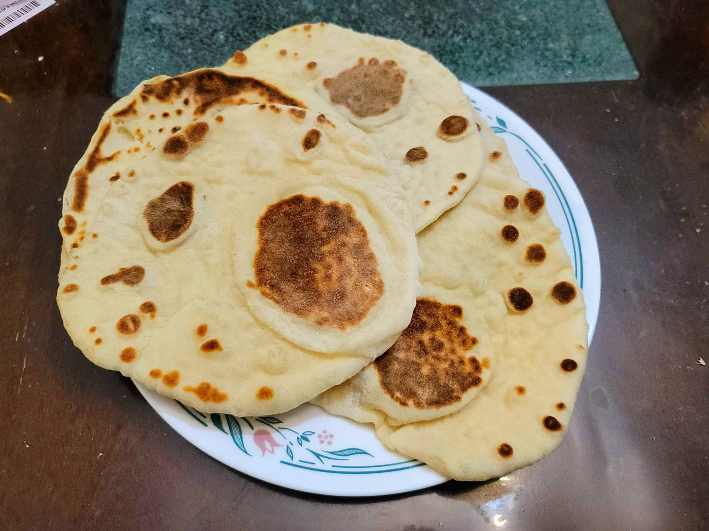

Naan

Ingredients:
- 1/2 cup Water, about 105-110 degrees Fahrenheit
- 1/4 oz Active dry yeast
- 1 tsp Sugar
- 270 g Flour
- 1/2 cup Yogurt
- 1/2 tsp Salt
- 1 tbsp Oil
Instructions:
- Whisk together the warm water, yeast, and sugar. Let sit for 10 minutes for the yeast to activate. Then combine all the ingredients together and knead together until it forms a smooth ball of dough, at least 10 minutes. Place the dough into a greased sealable container and let rise for 1 hour or until doubled in size.
- Once the dough has doubled, separate the dough into 8 equal pieces. Roll out a piece of dough into an 8 inch disc using a rolling pin. Heat a large, greased pan over high heat. Place the dough disc onto the pan and let cook for about 60 seconds, or until it bubbles and puffs up. Flip it and cook for another 30-60 seconds. Repeat this for all the pieces of dough.
- Serve immediately with dishes such as butter chicken, chicken tikka masala, or even on its own.